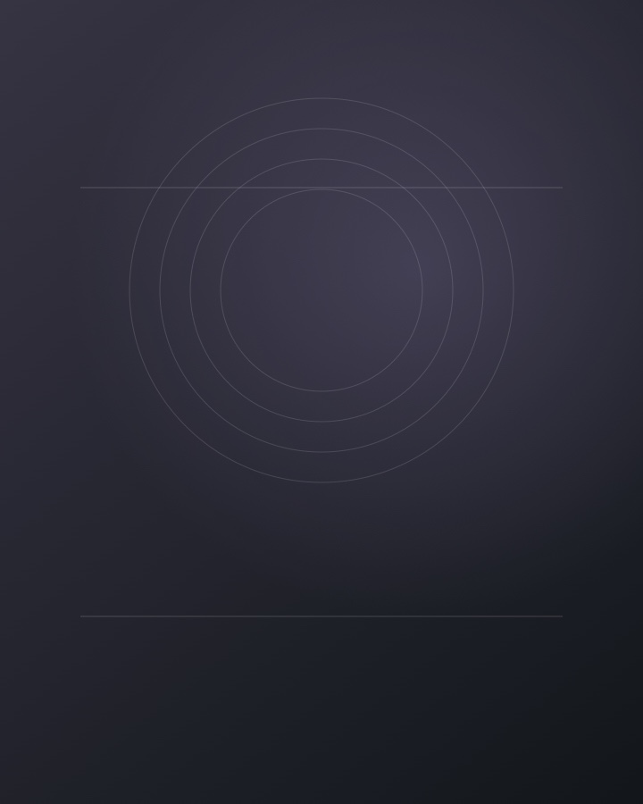

Baku, AZ · ADA University
Hi, I'm Rasul.
I write code.
I test systems.
I study Information Systems at ADA University. I use code and small hardware projects to test what I learn in class.

CURRENTLY // BAKU, AZ
TERM // FALL 2026
- STUDYING
- Information Systems (SITE 1101) at ADA University
- BUILDING
- Static web interfaces with semantic HTML, CSS & Vanilla JS
- EXPLORING
- How hardware logic gates translate into software systems
Featured projects 2026
View all projects